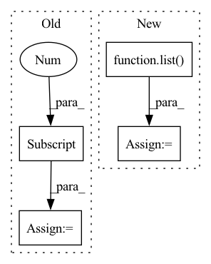

Pattern ID :13062
Before Change
// bottom-up
outs = [None] * self.num_levels
outs[0] = tds[0]
for i in range(self.num_levels - 2):
outs[i + 1] = self.out_fuses[i](
[x[i + 1], tds[i + 1], self.downsample(tds[i])]
) // P4in + P4td + resize(P3td)After Change
tds[-2 - i] = td_fuse([x[-2 - i], self.upsample(tds[-1 - i])])
// bottom-up, P4in + P4td + resize(P3td)
outs = list( tds)
for i, out_fuse in enumerate(self.out_fuses):
outs[i + 1] = out_fuse([x[i + 1], tds[i + 1], self.downsample(tds[i])])
// // P7in + resize(P6td)In pattern: SUPERPATTERN
Frequency: 8
Non-data size: 4
Instances Fragment ID: 44052739
Project Name: gau-nernst/vision-toolbox
Commit Name: ccf583d8766c43835ae87b11093ac1485be46da8
Time: 2022-05-06
Author: gau.nernst@yahoo.com.sg
File Name: vision_toolbox/necks.py
M Class Name: BiFPNLayer
N Class Name: BiFPNLayer
M Method Name: forward(2)
N Method Name: forward(2)
M Parent Class: nn.Module
N Parent Class: nn.Module
M File Name: vision_toolbox/necks.py
N File Name: vision_toolbox/necks.py
M Start Line: 203
M End Line: 217
N Start Line: 198
N End Line: 208
Before Change
feature_extractor=Fbank(),
cuts=libri_cut_set
)
ref_feats = ref_dataset[0]
tested_feats = tested_dataset[0]
// Note: comparison to 1 decimal fails.
// I"m assuming this is due to lilcom"s compression.
// Pytest outputs looks like the following:After Change
def test_on_the_fly_feature_extraction_unsupervised_dataset(libri_cut_set):
ids = list( libri_cut_set.ids)
ref_dataset = UnsupervisedDataset(libri_cut_set)
tested_dataset = DynamicUnsupervisedDataset(
feature_extractor=Fbank(),
cuts=libri_cut_set Fragment ID: 44052786
Project Name: lhotse-speech/lhotse
Commit Name: e3a7de4638675b692e74e1c60b2421e0cfa09de9
Time: 2021-02-22
Author: petezor@gmail.com
File Name: test/dataset/test_unsupervised_dataset.py
M Class Name: AnonimousClass
N Class Name: AnonimousClass
M Method Name: test_on_the_fly_feature_extraction_unsupervised_dataset(1)
N Method Name: test_on_the_fly_feature_extraction_unsupervised_dataset(1)
M Parent Class:
N Parent Class:
M File Name: test/dataset/test_unsupervised_dataset.py
N File Name: test/dataset/test_unsupervised_dataset.py
M Start Line: 31
M End Line: 37
N Start Line: 33
N End Line: 40
Before Change
def test_unsupervised_dataset(libri_cut_set):
dataset = UnsupervisedDataset(libri_cut_set)
assert len(dataset) == 1
feats = dataset[0]
assert feats.shape == (1000, 40)
def test_unsupervised_waveform_dataset(libri_cut_set):After Change
def test_unsupervised_dataset(libri_cut_set):
ids = list( libri_cut_set.ids)
dataset = UnsupervisedDataset(libri_cut_set)
assert len(dataset) == 1
feats = dataset[ids]
assert feats.shape == (1, 1000, 40) Fragment ID: 44052755
Project Name: lhotse-speech/lhotse
Commit Name: e3a7de4638675b692e74e1c60b2421e0cfa09de9
Time: 2021-02-22
Author: petezor@gmail.com
File Name: test/dataset/test_unsupervised_dataset.py
M Class Name: AnonimousClass
N Class Name: AnonimousClass
M Method Name: test_unsupervised_dataset(1)
N Method Name: test_unsupervised_dataset(1)
M Parent Class:
N Parent Class:
M File Name: test/dataset/test_unsupervised_dataset.py
N File Name: test/dataset/test_unsupervised_dataset.py
M Start Line: 17
M End Line: 19
N Start Line: 17
N End Line: 20
Before Change
def test_unsupervised_waveform_dataset(libri_cut_set):
dataset = UnsupervisedWaveformDataset(libri_cut_set)
assert len(dataset) == 1
audio = dataset[0]
assert audio.shape == (1, 10 * 16000)
def test_on_the_fly_feature_extraction_unsupervised_dataset(libri_cut_set):After Change
def test_unsupervised_waveform_dataset(libri_cut_set):
ids = list( libri_cut_set.ids)
dataset = UnsupervisedWaveformDataset(libri_cut_set)
assert len(dataset) == 1
audio = dataset[ids]
assert audio.shape == (1, 10 * 16000) Fragment ID: 44052708
Project Name: lhotse-speech/lhotse
Commit Name: e3a7de4638675b692e74e1c60b2421e0cfa09de9
Time: 2021-02-22
Author: petezor@gmail.com
File Name: test/dataset/test_unsupervised_dataset.py
M Class Name: AnonimousClass
N Class Name: AnonimousClass
M Method Name: test_unsupervised_waveform_dataset(1)
N Method Name: test_unsupervised_waveform_dataset(1)
M Parent Class:
N Parent Class:
M File Name: test/dataset/test_unsupervised_dataset.py
N File Name: test/dataset/test_unsupervised_dataset.py
M Start Line: 24
M End Line: 26
N Start Line: 25
N End Line: 28
Before Change
augment_fn=WavAugmenter.create_predefined("reverb", sampling_rate=16000)
)
// Just test that it runs
tested_feats = tested_dataset[0]
After Change
@pytest.mark.skipif(not is_wav_augment_available(), reason="Requires WavAugment")
def test_on_the_fly_feature_extraction_unsupervised_dataset_with_augmentation(libri_cut_set):
ids = list( libri_cut_set.ids)
tested_dataset = DynamicUnsupervisedDataset(
feature_extractor=Fbank(),
cuts=libri_cut_set,
augment_fn=WavAugmenter.create_predefined("reverb", sampling_rate=16000) Fragment ID: 44052756
Project Name: lhotse-speech/lhotse
Commit Name: e3a7de4638675b692e74e1c60b2421e0cfa09de9
Time: 2021-02-22
Author: petezor@gmail.com
File Name: test/dataset/test_unsupervised_dataset.py
M Class Name: AnonimousClass
N Class Name: AnonimousClass
M Method Name: test_on_the_fly_feature_extraction_unsupervised_dataset_with_augmentation(1)
N Method Name: test_on_the_fly_feature_extraction_unsupervised_dataset_with_augmentation(1)
M Parent Class:
N Parent Class:
M File Name: test/dataset/test_unsupervised_dataset.py
N File Name: test/dataset/test_unsupervised_dataset.py
M Start Line: 55
M End Line: 61
N Start Line: 58
N End Line: 65
Before Change
// _HAS_DUMMY_FORWARD = False
def forward(self, x: TensorOrTensors, micro_batch_idx):
assert not isinstance(x, Tensor)
label = x[-1]
x = x[:-1]
if self.training:
x = list(get_r(x, self.req_grad))
self.input_buffer[micro_batch_idx] = xAfter Change
if self.training:
// For backprobpagating gradients
x = list( get_r(x, req_grad))
self.input_buffer[micro_batch_idx] = list(filter_req_grad_tensors(flatten(x)))
// UNFLATEN
x = unflatten(x, req_grad) Fragment ID: 44052741
Project Name: saareliad/ftpipe
Commit Name: 9fba494226b280aadc1b0845d8a3142452594bd4
Time: 2020-06-29
Author: saareliad@campus.technion.ac.il
File Name: pipeline/partition.py
M Class Name: LastPartitionWithLabelInput
N Class Name: LastPartitionWithLabelInput
M Method Name: forward(3)
N Method Name: forward(3)
M Parent Class: LastPartition
N Parent Class: LastPartition
M File Name: pipeline/partition.py
N File Name: pipeline/partition.py
M Start Line: 324
M End Line: 337
N Start Line: 330
N End Line: 343
Before Change
trials = exp.get_trials()
assert len(trials) == 1, trials
trial = trials[0]
assert client.get_trial(trial.id).id == trial.id
ckpt = trial.top_checkpoint()
After Change
trial = exp.await_first_trial()
// .logs(follow=True) block until the trial completes.
all_logs = list( trial.logs(follow=True))
assert exp.wait() == _client.ExperimentState.COMPLETED
assert all_logs == list(trial.logs()) Fragment ID: 44052780
Project Name: determined-ai/determined
Commit Name: b646464a0b099ee427c1cc341d3f40ce1d77f610
Time: 2022-10-25
Author: rb@hpe.com
File Name: e2e_tests/tests/test_sdk.py
M Class Name: AnonimousClass
N Class Name: AnonimousClass
M Method Name: test_completed_experiment_and_checkpoint_apis(1)
N Method Name: test_completed_experiment_and_checkpoint_apis(1)
M Parent Class:
N Parent Class:
M File Name: e2e_tests/tests/test_sdk.py
N File Name: e2e_tests/tests/test_sdk.py
M Start Line: 36
M End Line: 38
N Start Line: 34
N End Line: 46
Before Change
best_epoch, n_iter = 0, 0
for epoch in trange(args.epochs):
logger.debug("Epoch {}".format(epoch))
lr = scheduler.get_lr()[0]
logger.debug("Learning rate = {:.3e}".format(lr))
writer.add_scalar("learning_rate", lr, n_iter)
n_iter = train(After Change
logger.debug("Fitting scaler")
train_smiles, train_labels = zip(*train_data)
scaler = StandardScaler().fit(train_labels)
train_data = list( zip(train_smiles, scaler.transform(train_labels).tolist()))
else:
scaler = None
// Get loss and metric functions Fragment ID: 44052750
Project Name: aamini/chemprop
Commit Name: 64f98d60d13bc4bd7131ea4453b03163503cce0c
Time: 2018-10-02
Author: swansonk.14@gmail.com
File Name: train.py
M Class Name: AnonimousClass
N Class Name: AnonimousClass
M Method Name: run_training(1)
N Method Name: run_training(1)
M Parent Class:
N Parent Class:
M File Name: train.py
N File Name: train.py
M Start Line: 59
M End Line: 117
N Start Line: 58
N End Line: 102